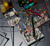

We’re experimenting with series and stacks for maximum impact. Cylinders, spheres, squares, rectangles, bucky balls, polyhedrons are all fair game (thanks to 3D printing).
Recent research revelations have revealed that high temperature MFCs are superior to ones that operate and normal temperatures. Hyperthermophiles thrive on that so there’s our focus. You can call it an HMFC (hot) since that acronym hasn’t been claimed yet.
The varibility of performance is highly correlated to how the electrodes are designed and fabricated. We’re pushing the limits of 3D printing to make high-performance anodes and cathodes efficiently and affordably. Metal electrodes, carbon nanotubes, magnetic joinery, silicone, are all part of our journey.
Smart electrical engineering can boost power output and harvest energy are an essential focus in order to enhance MFCs across the board. We’re comparing different microchip designs in different MFC types.
A major issue with current research is the variation of data aggregation between different studies. We are collecting a comprehensive set that will help standardize outcomes.
Included are but not limited to the following: